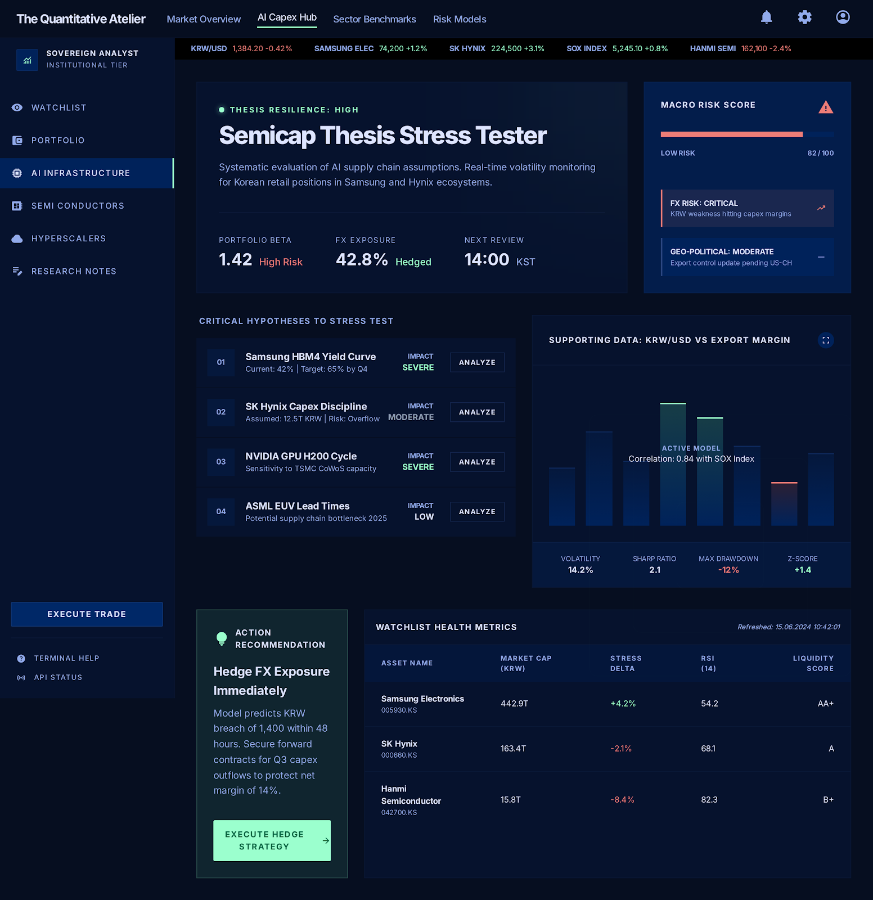

PF SAFE DEMO · 2026-03-20-p001
Semicap Thesis Stress Tester
Stress-test semiconductor investment theses against macro shocks before conviction breaks in the real market.
ingest status
Imported from Stitch exportStitch export was wrapped in a PF-safe shell so the visual remains intact while the published demo stays build-safe and dependency-light.
- Source preserved as local artifact
- Public demo path avoids remote CDN dependency
- Preview uses the shipped Stitch screen
